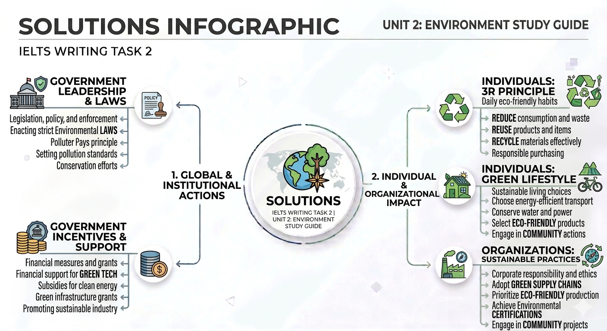

Bảo vệ môi trường không còn là trách nhiệm của riêng cá nhân nào. Đây là sự kết hợp giữa quy định của chính phủ (Governmental Regulations) và ý thức cá nhân (Individual Awareness).
Trong Writing Task 2, khi bàn về môi trường, hãy luôn sử dụng cấu trúc "Top-down approach" (Chính phủ áp đặt luật) và "Bottom-up approach" (Cá nhân thay đổi hành vi).
Cấu trúc gia đình hiện đại đang trải qua một sự chuyển dịch mạnh mẽ (paradigm shift) từ mô hình truyền thống sang các mô hình đa dạng hơn.
| Factor | Impact (Hệ quả) |
|---|---|
| Income Level | Low income = Extended families (save costs). High income = Independent households. |
| Cost of Living | High expenses lead to delaying marriage and small-sized families. |
| Technology | Reduced interaction. Egg freezing/Reproductive tech allows delayed childbearing. |
| Demographics | Aging population results in more single-person households. |
Việc sinh ít con đang trở thành xu thế tại các quốc gia phát triển. Dưới đây là phân tích ưu và nhược điểm:
Điền từ thích hợp vào chỗ trống để hoàn thiện luận điểm Band 8: